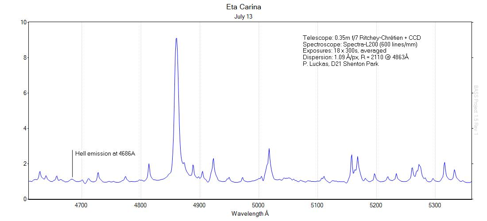
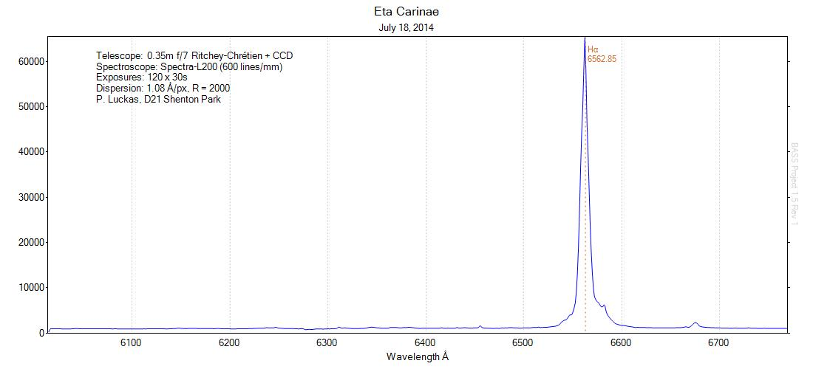
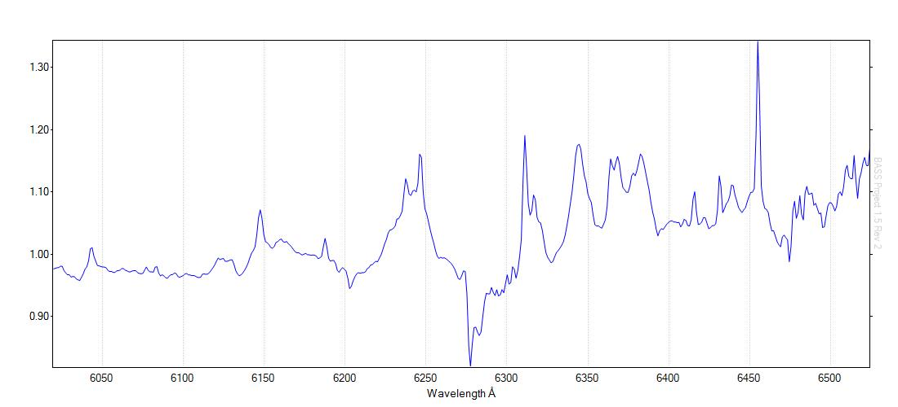

A test data acquisition of Eta Carinae spectra to assess the potential for contributing to current monitoring projects. Conditions were poor (cloudy) but results look promising.
The profile below has been corrected for instrument response and normalised.

Additional spectra near the Ha emission taken on July 18:

